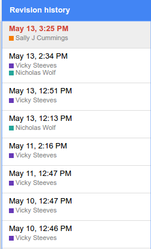
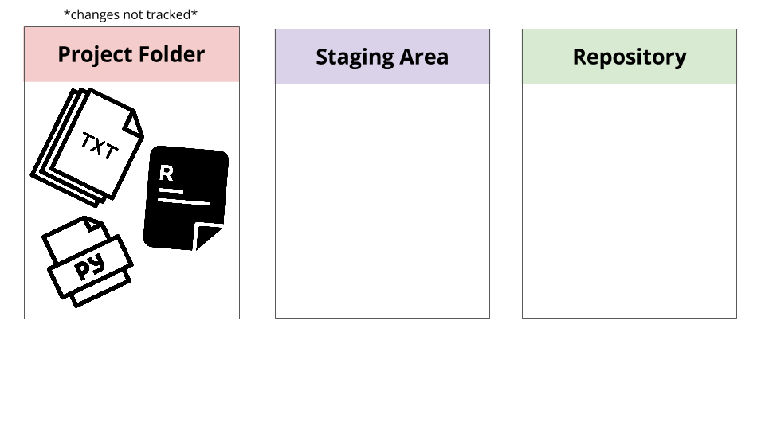
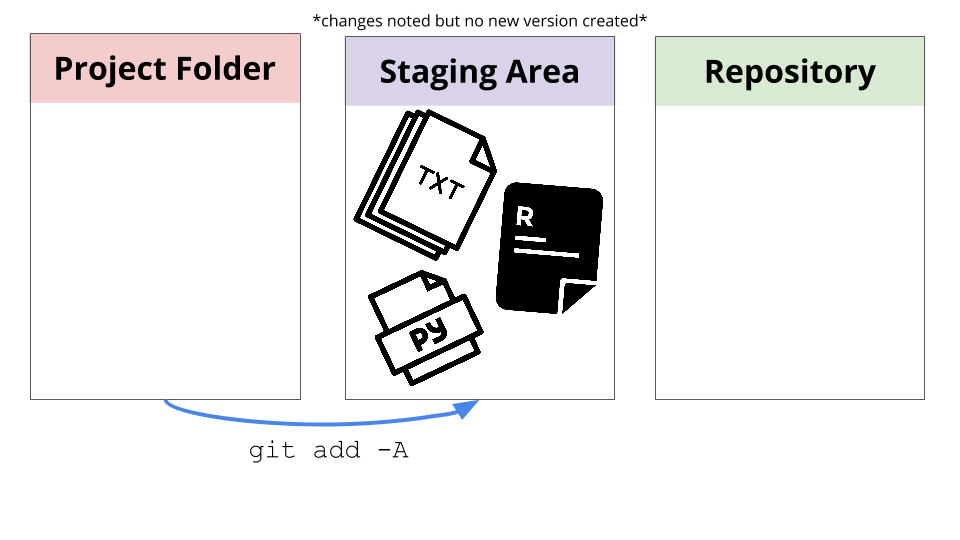
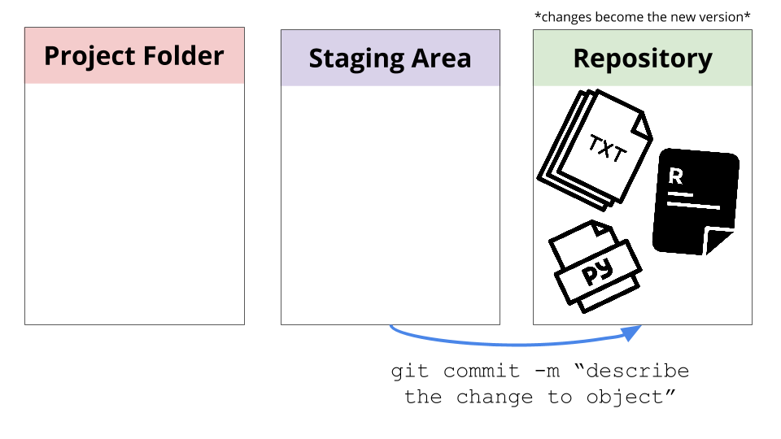
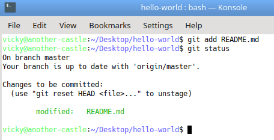
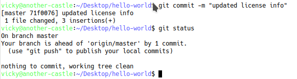

Introduction to Git & GitHub
Vicky Steeves | February 28, 2018

1st Thing: Git != GitHub
Git is a revision control system, a program to manage your source code history. It is strictly a command-line tool.
GitHub is a website where you can upload a copy of your Git repository. It allows people to collaborate via Git along with some other features.
What is Version Control?
From Wikipedia: "the management of changes to documents, computer programs, large web sites, and other collections of information."
Basically, it's a way for us to compare, restore, and merge changes to our stuff.
Why Version Control?
To avoid this:

Where do we see version control?
If you've collaborated via Google Docs, Sheets, or Slides, you have used version control!
Basic Git Overview
The purpose of Git is to manage a project, or a set of files, as it changes over time. Git stores this information in a data structure called a repository.
A Git repository contains, among other things, the following:
- Snapshots of your files (text, images, whatever)
- References to these snapshots, called heads
The Git repository is a hidden sub-folder in your project folder, called .git. You probably won't have to touch this ever.
Basic Git Overview: Branches
Git works on branches, which represent independent lines of development, as each snapshot is linked to a 'parent' one it built upon. By default, everyone's repositories are on a "master" branch.

We won't go over this in class, but this tutorial (where the above img came from) and this tutorial are really great.
How Git Does Version Control
There are 3 states that your objects can be in:
How Git Does Version Control
When you add objects, you are telling Git that you made changes you want to track.
How Git Does Version Control
When you commit your changes, you tell Git that it is the latest version of your objects.
Let's Try It!
Setting Up Git
Let's get on the command line and start!
- On Windows, in the start menu search, type Git Bash
- On Mac OSX, search terminal from spotlight search
Then type the following as separate commands:
git config --global user.name "Vicky Steeves"
git config --global user.email "vicky.steeves@nyu.edu"
git config --global color.ui "auto"
git config --global core.editor "gedit"
git config --list # lists your configurations
Where it says core.editor, put in your favourite plain text editor. This could be simply Notepad (Windows) or TextWrangler (Mac), but NOT Word.
Create a Folder & Repository
To create a blank repository, we have to create a new project folder and then initialize Git inside of it.
Type the following as separate commands in your command line:
cd Desktop
mkdir hello-world
cd hello-world
git init
You've just created an empty Git repository!
Let's Track a File
- Open your text editor from before.
- Type out: hi there everyone, I am learning Git because I rock.
- Save this file as hi.txt in your hello-world folder.
- Go back to the command line.
Type the following as separate commands:
git add hi.txt
git status
Adding our Text File
You should see something that looks like this:
Committing our Text File
Let's commit so Git officially records this as our first draft!
git commit -m "first draft"
git status
You should see something that looks like this:
Now try it on your own!
- Modify the text file in your hello-world folder.
- Add it and commit it.
- Raise your blue stickie note to show you've finished!
Viewing Revision History
To review what you've been up to, type this in the terminal:
git log
This will list your commits with their IDs, date/time of creation, and commit messages. If you want to only look at the changes to a specific file, enter this command in the terminal:
git log hi.txt
This will list changes as before, but only those affecting this file.
Viewing Different Commits
Remember that weird number from git log next to commits? This unique hash allows you to refer to that version. For example, enter this in your terminal:
git diff 7a9209f # first 7 characters of hash as shown before
This compares your current files with that previous version.
Using History
The same hash from before can be used to check out files from that previous version:
git checkout HEAD filename
checkout is used to tell Git to revert files back to the version listed.
Exercise
Now let's try viewing and rewriting history!
- Overwrite hi.txt
- Revert to the first saved version of hi.txt
- Switch back to the most recent version of hi.txt